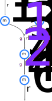

Parameter estimation using proteomics and flux data
using DifferentiableMetabolism
using AbstractFBCModels
using FastDifferentiation
using ConstraintTrees
using COBREXA
using Clarabel
using Tulip
using JSONFBCModels
using CairoMakieAbstractFBCModels.CanonicalModel.Model(
reactions = Dict{String, AbstractFBCModels.CanonicalModel.Reaction}("r1" => AbstractFBCModels.CanonicalModel.Reaction("r1", -2.0, 0.0, Dict("m1" =>…
metabolites = Dict{String, AbstractFBCModels.CanonicalModel.Metabolite}("m3" => AbstractFBCModels.CanonicalModel.Metabolite("m3", nothing, nothing,…
genes = Dict{String, AbstractFBCModels.CanonicalModel.Gene}("g4" => AbstractFBCModels.CanonicalModel.Gene("g4", Dict{String, Vector{String}}(), Dic…
couplings = Dict{String, AbstractFBCModels.CanonicalModel.Coupling}(),
)
prune model for brevity
delete!(model.reactions, "r5")
delete!(model.genes, "g4")
delete!(model.genes, "g5")
delete!(model.genes, "g3")
model.reactions["r4"].gene_association_dnf = [["g2"]]
model.reactions["r1"].lower_bound = -1000.0
model.reactions["r2"].lower_bound = -1000.0-1000.0now models looks like this

@variables r3 r4
reaction_isozymes = Dict(
"r3" => Dict(
"isozyme1" => ParameterIsozyme(
gene_product_stoichiometry = Dict("g1" => 1.0), # assume subunit stoichiometry of 1 for all isozymes
kcat_forward = r3,
kcat_reverse = nothing,
),
),
"r4" => Dict(
"isozyme1" => ParameterIsozyme(
gene_product_stoichiometry = Dict("g2" => 1.0), # assume subunit stoichiometry of 1 for all isozymes
kcat_forward = r4,
kcat_reverse = nothing,
),
),
)
gene_product_molar_masses = Dict("g1" => 20.0, "g2" => 10.0)
@variables capacitylimitation
true_parameter_values = Dict(:capacitylimitation => 50.0, :r3 => 2.0, :r4 => 3.0)
km = build_kinetic_model(
model;
reaction_isozymes,
gene_product_molar_masses,
capacity = capacitylimitation,
)
sol, _, _, _ = optimized_constraints_with_parameters(
km,
true_parameter_values;
objective = km.objective.value,
optimizer = Tulip.Optimizer,
)
sol.fluxesConstraintTrees.Tree{Float64} with 5 elements:
:r1 => -3.75
:r2 => -3.75
:r3 => 3.75
:r4 => 3.75
:r6 => 3.75create a loss function
measured = [
sol.fluxes.r1,
sol.fluxes.r3,
sol.isozyme_forward_amounts.r3.isozyme1,
sol.isozyme_forward_amounts.r4.isozyme1,
]
km *=
:loss^ConstraintTrees.Constraint(;
value = 0.5 * (
ConstraintTrees.squared(km.fluxes.r1.value - measured[1]) +
ConstraintTrees.squared(km.fluxes.r3.value - measured[2]) +
ConstraintTrees.squared(
km.isozyme_forward_amounts.r3.isozyme1.value - measured[3],
) +
ConstraintTrees.squared(
km.isozyme_forward_amounts.r4.isozyme1.value - measured[4],
)
),
bound = nothing,
)
estimated_parameters = Dict(:capacitylimitation => 50.0, :r3 => 5.0, :r4 => 1.0) # initial values
η = 0.1 # learning rate
losses = Float64[]
kmKKT, vids = differentiate_prepare_kkt(
km,
km.loss.value,
[:r3, :r4, :capacitylimitation],
)
for k = 1:150
sol2, x_vals, eq_dual_vals, ineq_dual_vals = optimized_constraints_with_parameters(
km,
estimated_parameters;
objective = km.loss.value,
optimizer = Clarabel.Optimizer,
sense = COBREXA.Minimal,
modifications = [COBREXA.silence],
)
push!(losses, sol2.loss)
sens = differentiate_solution(
kmKKT,
x_vals,
eq_dual_vals,
ineq_dual_vals,
estimated_parameters,
)
measured_idxs = [1, 3, 12, 11]
x = [
sol2.fluxes.r1,
sol2.fluxes.r3,
sol2.isozyme_forward_amounts.r3.isozyme1,
sol2.isozyme_forward_amounts.r4.isozyme1,
]
dL_dx = x - measured # derivative of loss function with respect to optimization variables
dL_dkcats = sens[measured_idxs, :]' * dL_dx # derivative of loss function with respect to parameters
estimated_parameters[:r3] -= η * dL_dkcats[1]
estimated_parameters[:r4] -= η * dL_dkcats[2]
end
lines(losses; axis = (xlabel = "Iterations", ylabel = "L2 loss"))estimated_parametersDict{Symbol, Float64} with 3 entries:
:r3 => 2.05711
:capacitylimitation => 50.0
:r4 => 3.00787true_parameter_valuesDict{Symbol, Float64} with 3 entries:
:r3 => 2.0
:capacitylimitation => 50.0
:r4 => 3.0This page was generated using Literate.jl.